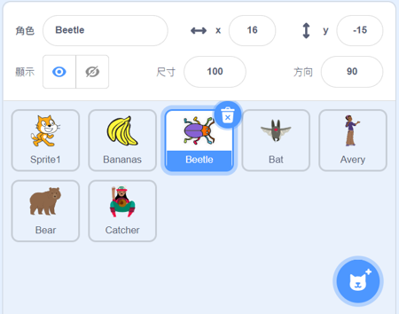
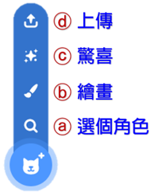

|
|
|---|
 角 色
角 色
「角色」是Scratch操作的主要對象，大部分的操作和編程程序都是圍繞角色來進行的。
角色就像是皮影戲中的被操控的皮偶，透過積木編程可以控制它們在舞臺上的移動、跳躍、說話、唱歌、彈琴、畫畫、或是做數學作業。過程中，它們可能與其他角色相撞、也可能撞上舞臺的邊緣而被彈了回來。此外，它們還可以像怪獸一樣的變大變小、改變顔色、變形或者隱藏、顯示。在絕大部分的專案中，都至少有一個角色，它與舞臺背景不同，它是可以自由移動的。
專案中所使用的角色，都會出現在舞臺下方的角色列表窗格中（如右圖）。你可以在編程時，隨時的將它們在舞臺中任意拖動。當你選中它，在編輯程式介面中就會切換成該角色的程式、造型和音效等相關窗格（透過分頁按鈕來選擇顯示）。
透過角色列表窗格右下方的「新增角色按鍵」，可以從範例角色庫中選擇、由程式隨機添增、自己繪畫創建或是從電腦中上傳來新增角色。
每個角色都可以透過程式腳本區中積木的編程來運行，它的腳本是獨立的，但又可透過廣播、變數或偵測積木來與其它角色互動。每個角色至少都有一種造型，可透過造型窗格中的「圖像編輯器」來繪製，並使用積木編程來切換。角色也可以透過音效窗格中的「聲音編輯器」來自行錄製聲音。